Colegio Horizonte - Sistema de Gestión Escolar
Autor: Yhoner Toro
Asignatura: Desarrolo web
Descripción: Implementación de base de datos en
múltiples motores (MySQL, PostgreSQL, SQL Server y Oracle) utilizando
Docker y herramientas de administración.
Introducción
En este documento se presenta la implementación de una base de datos relacional para el sistema Colegio Horizonte en cuatro motores:
- MySQL
- PostgreSQL
- SQL Server
- Oracle
Se realiza la creación desde consola (Ubuntu + Docker) y su visualización en herramientas gráficas como DBeaver
1. Gestión de contenedores Docker
Se verifican y activan los contenedores necesarios:
-docker ps -a
-docker start mysql-server
-docker start postgres-server
-docker start mssql-server
-docker start oracle-xe
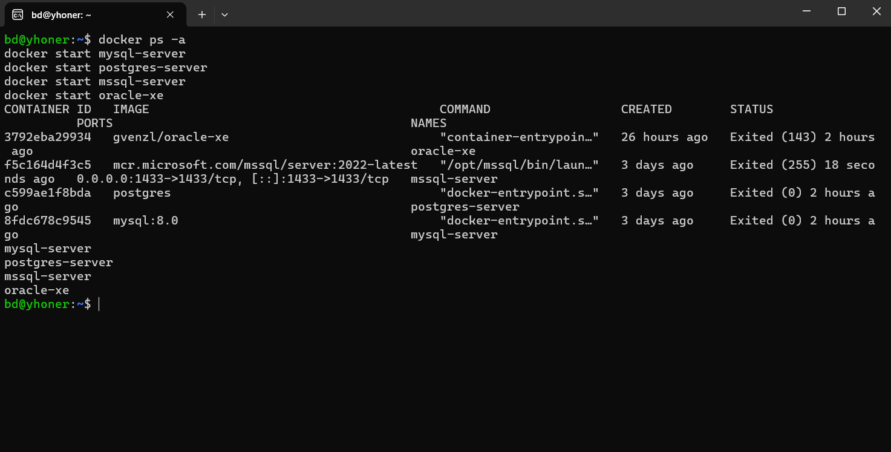
2. Motor MySQL
2.1 Acceso a MySQL desde Docker
Se accede al motor MySQL ejecutando el siguiente comando desde la terminal de Ubuntu:
docker exec -it mysql-server mysql -u root -p

Se verifica
SHOW DATABASES;

Realizar enlace con DBeaver
Para la administración y visualización de la base de datos, se realiza la conexión al motor MySQL utilizando la herramienta DBeaver.
DBeaver permite gestionar bases de datos de manera gráfica, facilitando la visualización de tablas, relaciones y ejecución de consultas SQL.
La conexión se realiza utilizando los siguientes parámetros:
- Host: 172.18.57.107
- Puerto: 3306
- Base de datos:
- Usuario: root
- Contraseña: (la configurada en el contenedor)
Una vez establecida la conexión, se procede a verificar la existencia de la base de datos y sus respectivas tablas.
Posteriormente, se navega por el esquema de la base de datos donde se pueden observar las tablas creadas, su estructura y relaciones.
Esta herramienta permite además ejecutar consultas, generar diagramas entidad-relación y validar la integridad de la base de datos de forma visual.
Evidencia
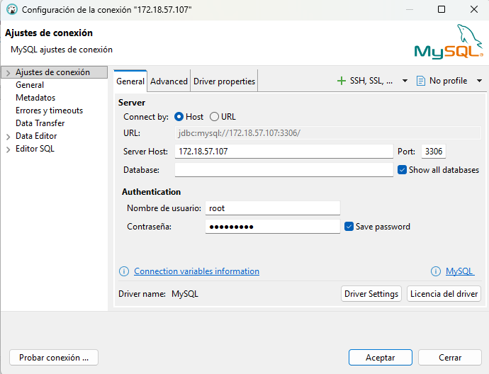
Creación de tablas en MySQL
Para el desarrollo del sistema Colegio Horizonte se diseñó un conjunto de tablas que permiten gestionar la información de estudiantes, acudientes, grupos, matrículas, cursos, asistencia, calificaciones y pagos.Teniendo en cuenta las reglas dichas por el profesor el los videos de apoyo
Estas tablas están relacionadas entre sí mediante llaves primarias y foráneas, garantizando la integridad referencial y el correcto funcionamiento del sistema.
A continuación, se presenta la creación de las tablas en la base de datos:
Tabla: students
Para esta primera tabla quise crearla en ubuntu para probar la terminal
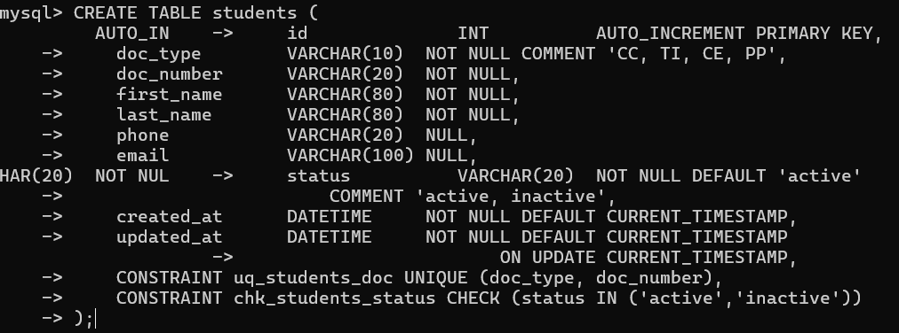
la tabla se creo con exito y fue reflejada al actualizar en dbeaver

Tabla: guardians
La tabla guardians almacena la información de los acudientes o responsables de los estudiantes.
Se relaciona con la tabla students mediante una llave foránea, permitiendo identificar qué acudiente pertenece a cada estudiante.
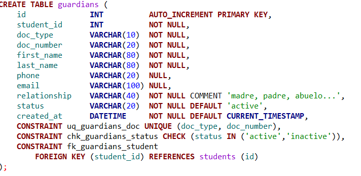
Tabla: groups
La tabla groups almacena la información de los grupos o salones asignados a los estudiantes dentro del colegio.
Permite organizar a los estudiantes por grado y periodo académico, facilitando la gestión de matrículas, cursos y asistencia.
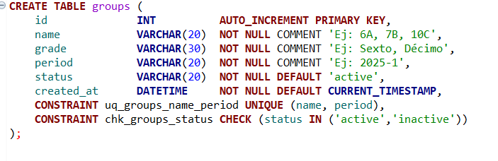
Tabla: enrollments
La tabla enrollments registra las matrículas de los estudiantes, relacionando cada estudiante con un grupo específico.
Esta tabla es fundamental, ya que conecta la información académica y permite gestionar procesos como asistencia, calificaciones y pagos.
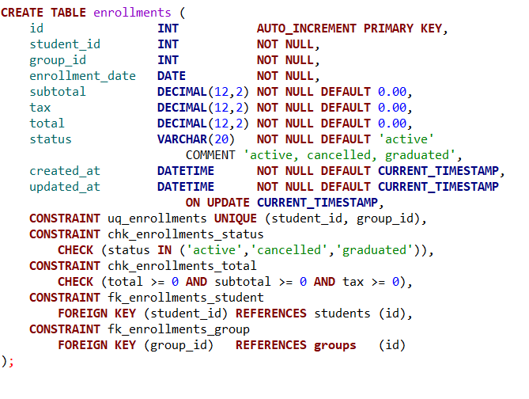
Tabla: courses
La tabla courses almacena la información de las asignaturas o materias impartidas en el colegio.
Cada curso está asociado a un grupo, lo que permite organizar las clases y gestionar posteriormente la asistencia y calificaciones de los estudiantes.
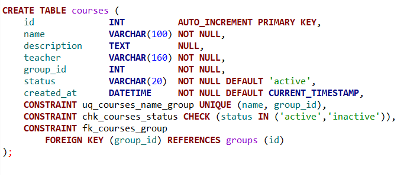
Tabla: attendances
La tabla attendances registra la asistencia de los estudiantes en cada curso y fecha específica.
Permite llevar control del estado de asistencia (presente, ausente, tarde o excusado), siendo fundamental para el seguimiento académico.
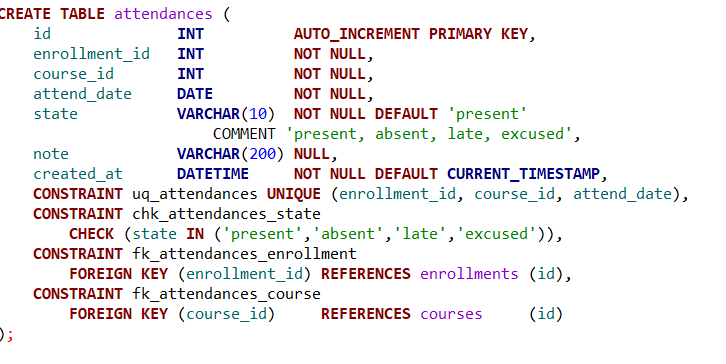
Tabla: grades
La tabla grades almacena las calificaciones de los estudiantes en cada curso y periodo académico.
Permite llevar el control del rendimiento académico, asociando cada nota a una matrícula y a una asignatura específica.
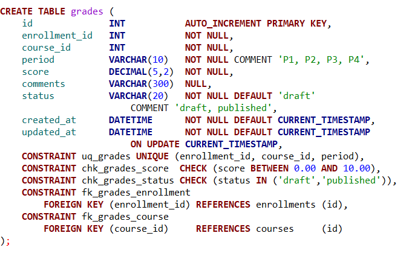
Tabla: tuition_payments
La tabla tuition_payments registra los pagos realizados por los estudiantes asociados a su matrícula.
Permite llevar el control financiero del sistema, incluyendo información como método de pago, monto, fechas y estado del pago.
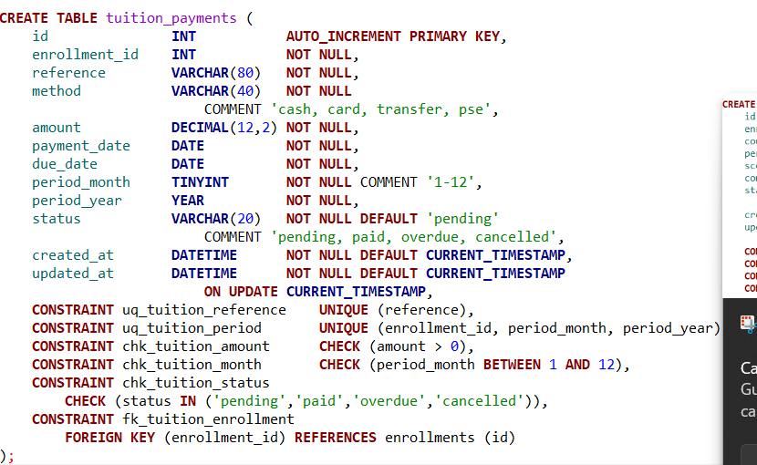
Diagrama entidad-relación Motor dbeaver
Una vez creadas todas las tablas, se procede a generar el diagrama entidad-relación
Este diagrama permite visualizar de manera gráfica la estructura de la base de datos, mostrando las tablas y las relaciones existentes entre ellas mediante llaves primarias y foráneas.
En el modelo se observa que la tabla students actúa como entidad principal, relacionándose con guardians y enrollments. A su vez, enrollments conecta con groups, lo que permite ubicar a cada estudiante en un grupo específico.
Las tablas courses se relacionan con groups, y a partir de estas se gestionan procesos académicos como la asistencia (attendances) y las calificaciones (grades), las cuales también dependen de la matrícula del estudiante.
Finalmente, la tabla tuition_payments se encuentra vinculada a enrollments, permitiendo llevar el control de los pagos asociados a cada estudiante.
Este diagrama facilita la comprensión del modelo de datos, evidenciando la integridad referencial y la correcta organización de las entidades dentro del sistema.
Evidencia
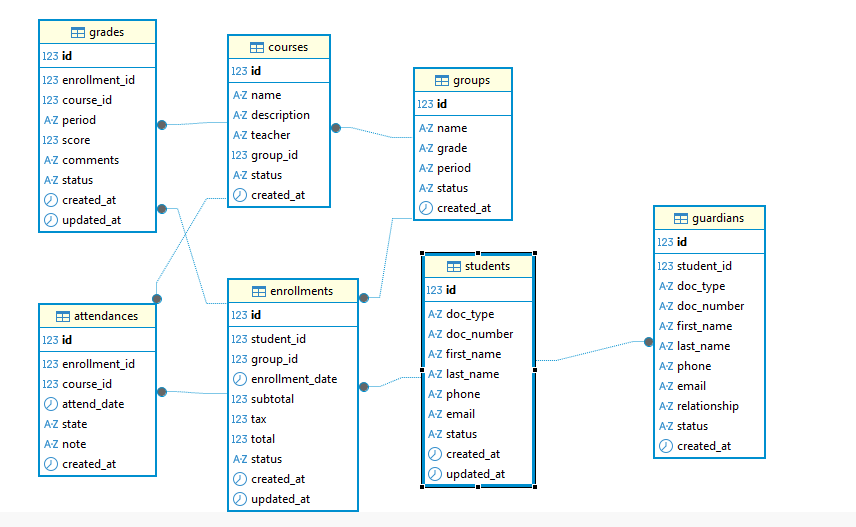
MySQL - Creación y visualización del modelo
Inicio del entorno
Se inicia el servicio de Docker en el sistema Ubuntu con el fin de levantar los contenedores que contienen los motores de bases de datos.
Posteriormente, se verifica que el contenedor de MySQL se encuentre en ejecución, asegurando que el servicio esté disponible para conexiones externas.

Una vez activado el server y sabiendo nuesta ip procedemos a realizar la conexion con workbench

luego se muestra el diagrama er para verificar que esta bien la base de datos

PostgreSQL — Creación y Conexión
Inicio del entorno
Se inicia el contenedor de PostgreSQL utilizando Docker desde el entorno Ubuntu, verificando que el servicio se encuentre activo y disponible para conexiones externas.
docker start postgres-server
docker ps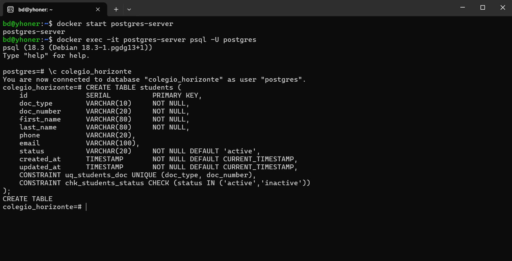
Conexión desde DBeaver
Una vez confirmado que el contenedor está en ejecución, se establece la conexión a la base de datos desde DBeaver, configurando los parámetros del host, puerto y credenciales correspondientes.
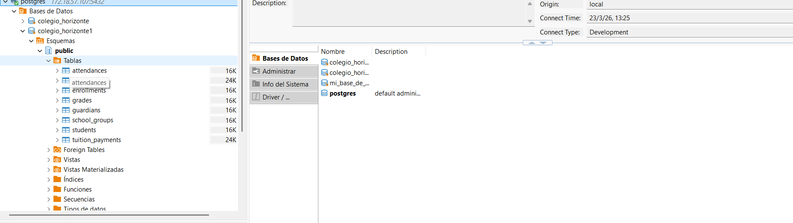
Diagrama de tablas en DBeaver
Con la conexión activa, se visualiza el esquema de la base de datos y el diagrama de las tablas creadas directamente desde el explorador de DBeaver.

Conexión desde pgAdmin 4
Se realiza adicionalmente la conexión a la misma instancia de PostgreSQL utilizando pgAdmin 4, registrando el servidor con los datos del contenedor Docker.

Diagrama ER en pgAdmin 4
Finalmente, se genera el diagrama entidad-relación (ER) desde pgAdmin 4, permitiendo visualizar de forma gráfica la estructura y las relaciones entre las tablas de la base de datos.